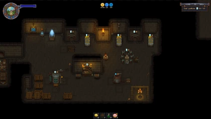

Souls room
| This article is a stub. You can help Graveyard Keeper Wiki by expanding it. |
| Souls room | |
|---|---|
Location information
| |
Buildable
|
True |
Exits
|
Morgue, Euric's Room |
Npcs
| |
| Euric, Smiler | |

The Souls room is shown to the Keeper by Euric. This room contains workstations used to extract, heal and release the souls of Corpses.
You will need to repair all machines in the room before you can properly complete a soul cleansing procedure. A fresh body is placed in the Soul extractor, generating a harmed soul. The soul decays much more quickly than the body, and it decays in the Corpse as well. To reduce this decay the souls can be stored in Soul containers.
The Harmed soul is placed in the Soul healer, which uses body parts (starting with Flesh and unlocking receptacles for other body parts to cleanse specific sins) to make a Healed soul. The body parts are not used up. If the body parts match the Harmed soul's requirements, it will result in a Healed soul in a higher condition. This also generates a number of Sin Shards based on the number of sins cleansed (the number of body parts used).
The Healed soul then is put into the Soul portal and delivered safely into the afterlife, generating Soul Gratitude based on how much the soul has decayed. Gratitude is used to unlock new technologies in the new Spiritualism Tech Tree, and can be used in conjunction with Soul Receivers to remotely use crafting stations from the updated map.
Finally, the Sin Shards can be used on the Organ Workbench to upgrade any body part except Bone, Skull up to 3  and/or 3
and/or 3  skulls. They can also be stored in the Soul Containers, and directly increase maximum souls' gratitude while there.
skulls. They can also be stored in the Soul Containers, and directly increase maximum souls' gratitude while there.
The currently known highest souls' gratitude set up is 2086 , with a fully upgraded Soul Extractor adding 30
, with a fully upgraded Soul Extractor adding 30 , the Soul Healer adding 15
, the Soul Healer adding 15 , two Wall Crematoriums adding 20
, two Wall Crematoriums adding 20 , a Workbench adding 5
, a Workbench adding 5 , six Pallet adding 6
, six Pallet adding 6 , 3 Soul Container III's filled with gold quality items that stack to 50 (such as quality crops or seeds) stored, each adding 620
, 3 Soul Container III's filled with gold quality items that stack to 50 (such as quality crops or seeds) stored, each adding 620 , and gold quality items that stack to 50 stored in Smiler's container, adding 150
, and gold quality items that stack to 50 stored in Smiler's container, adding 150 when it becomes open.
when it becomes open.
More is possible using a glitch: When placing a structure, if the player double clicks instead of a single click, the player is able to place the structure twice instead of once. Set up is shown below.
Broken glass is a byproduct of breaking down old broken bottles in the Souls room.
There is a Faceted diamond vein near the Soul portal.



A Souls room with more gratitude than it should be using the glitch
Broken Equipment
When the room is first opened, there are several pieces of broken equipment that need to be fixed before they can be used to heal souls. Fixing each piece of equipment will increase the room's gratitude capacity by a set amount.
| Equipment | Materials Required | Energy | Capacity | Notes |
|---|---|---|---|---|
| Repair soul extractor | 5× Simple iron parts 3× Nails 4× Flitch |
- |
10 |
Available when the Souls room first opens |
| Repair soul healer | 2× Glass 3× Simple iron parts 2× Skin |
- |
15 |
Available after soul extractor is repaired |
| Repair soul portal | 5× Simple iron parts 4× Nails 1× Polishing paste |
- |
- | Available after soul healer is repaired |
Workstations
Workstations are built using the workbench called "Souls". To unlock blueprints for the Souls room, you need the normal tech points, but also Soul Gratitude, obtained by healing souls. Building each piece of equipment will increase the room's gratitude capacity ( ) by a set amount.
) by a set amount.


| |||||